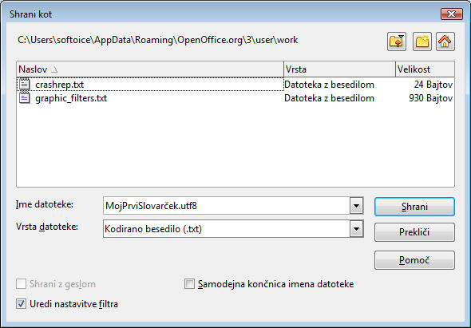
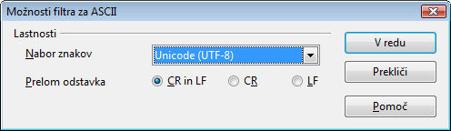

Geslovniki
Geslovniki so datoteke, ki se jih za uporabo v OmegaT sestavlja in ureja ročno.
OmegaT bo izraze v aktivnem segmentu poiskal v geslovnikih, ki so na razpolago, in prevode izrazov prikazal samodejno v prikaznem oknu za geslovnike
Uporaba
Obstoječi geslovnik lahko začnete uporabljati enostavno tako, da ga prekopirate v podimenik /glossary . OmegaT geslovnike v tem podimeniku samodejno prepozna, ko projekt odprete. Izraze v aktivnem segmentu, ki jih najde v geslovniku oz. geslovnikih, OmegaT samodejno pokaže v podoknu za geslovnike:

Beseda pred enačajem je izvorni izraz, prevod pa je beseda, oziroma besede za znakom = Vnosu v geslovnik lahko dodate tudi komentar (za primer glej "transitive verb" pri drugem izrazu). Funkcija pri iskanju po geslovnikih najde samo natančne zadetke (program na primer ne pozna sklanjatve, množine itd.). Nove izraze lahko med prevajanjem vnašate ročno (na primer s pomočjo urejevalnika besedila), vendar bodo novi vnosi na voljo šele po vnovičnem odprtju projekta.
Oblika zapisa datoteke
Geslovniki so datoteke z besedilom v treh s tabulatorjem ločenih stolpcih: v prvem stolpcu je izvirni izraz, v drugem stolpcu pa njegov prevod v ciljnem jeziku. Tretji stolpec je namenjen dodatnim podatkom. Geslovnike so lahko kodirane v privzetem kodiranju sistema (v tem primeru morajo datoteke imeti pripono .tab) ali v UTF-8 (v tem primeru morajo datoteke imeti pripono .utf8). Unicode (UTF8) oblika je seveda iz razumljivih razlogov bolj primerna.
Kako ustvarjati geslovnike
Tu opisana metoda je zanesljiva, če ji sledite na pameten način. Potrebovali boste OpenOffice.org Writer zanjo, tako da si - če še niste - naložite in namestite OpenOffice.org. Zaženite OpenOffice.org in odprite nov dokument z besedilom, oziroma poženite "OpenOffice.org Writer".
V prazen dokument vnašajte postavke v geslovniku, kot sledi: izraz v izvornem jeziku, tabulator, izraz v ciljnem jeziku, tabulator, komentar ali razlago izraza, in nato Enter kot zaključek vrstice. Tabulator je znak na levi strani tastature. Če ne želite komentarja, lahko izpustite drugi tabulator. "Izraz" je lahko ena sama beseda ali pa fraza. Nadaljujte v naslednji vrstici na enak način z naslednjim izrazom in njegovim prevodom. Potem tretja vrstica s tretjim izrazom in tako dalje.
Ko ste končali z vnosom, boste pred seboj imeli dva "stolpca" izrazov, izvorne izraze na levi in na desni izraze v ciljnem jeziku, mogoče še tu in tam vnos v tretji stolpec - vaše komentaerje in pripombe. Tabulator (→ v primeru zgoraj) in Enter (¶ ) postaneta vidna, če kliknete na ikono ¶ v standardni orodni vrstici za Writer. Tukaj nekaj vrstic za angleško-nemški geslovnik)
word →Wort→das (-/e/s, Wörter/-e)¶
small house→Häuschen→das,
(pl Häuschen)¶
dog →Hund→m, f Hündin ¶
horse→Pferd→n, m Hengst f Stute n Fohlen¶
NE uporabljajte v OpenOffice.org možnosti za tvorjenje "stolpcev", posamezne vnose ločite enostavno z enim znakom za tabulator.
Ko ste zaključili z vnašanjem, izberite Datoteka > Shrani kot V "Ime datoteke" vnesite ime za svoj geslovnik, ki mu dodajte končnico ".utf8" (npr "MojPrvislovarček.utf8"). V "Vrsta datoteke", izberite"Kodirano besedilo (.txt.)". Zbrišite izbirno polje "Samodejna končnica imena datoteke":

Kliknite na Shrani. Prikaže se dvogovor z dvema izbirama.. Potrdite izbiro "Ohrani trenutno vrsto datoteke".
V dialogu za opcije ASCII datotek (glej dalje), izberite "Unicode (UTF-8)":

Potrdite z OK.
Ko ustvarjate projekt OmegaT, prekopirajte ali prestavite to datoteko v podimenik \glossary novega projekta. Če je projekt že odprt, ga morate ponovno naložiti, ko ste datoteko prekopirali. Datoteko lahko med prevajanjem tudi dopolnjujete, vendar bo najnovejše stanje na razpolago šele, ko projekt ponovno naložite.
Če je odprt segment s poznanimi izrazi, bo podokno za geslovnike prikazalo vse vnose, ki ustrezajo izrazom v izbornem segmentu in ki se nahajajo v geslovniku(ali geslovnikih - uporabljate lahko več kot samo enega).S pomočjo Trados Multiterm
Geslovnike, ki se jih uporablja v programu Multiterm, je mogoče po besedilnem izvozu brez sprememb uporabiti v slovarjih OmegaT, pod pogojem, da ste jim dali pripono .tab in da sta izvorni in ciljni jezik prva dva stolpca v njih Če izvažate s pomočjo sistemske možnosti "Tab-delimited export", boste morali zbrisati prvih pet stolpcev (Seq. Nr, Date created itd), ki se nahajajo pred vnosoma, ki sta zanimiva.
Pogosti problemi z geslovniki
- Problem: No
glossary terms
are displayed.
- Možni razlogi:
- v podimeniku "glossary" ni najti ustreznih datotek.
- datoteka z gesli je prazna
- postavke niso ločene med seboj z znakom TAB
- datoteka nima pravilne pripone (.tab ali .utf8)
- Izvorni in ciljni izraz nista EKSAKTNO enaka - na primer izraz v besedilu je v množini -
- geslovniki niso shranjeni v ustrezni kodi
- v aktivnem segmentu ni izrazov, ki bi ustrezali vnosom v geslovnik
- lahko da ste enega ali več od imenovanih problemov uspešno rešili, vendar ste pozabili ponovno naložiti projekt
- Problem: podokno za gesla nekaterih znakov ne kaže prav (pri tem pa so isti znaki prikazani na pravilen način v urejevalniku).
- Možni razlogi:
- pripona in kodiranje datoteke si ne ustrezata.